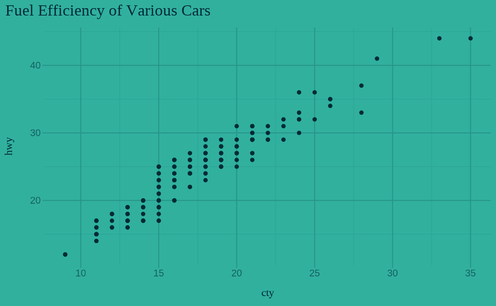

Lifecycle: Maturing
A ggplot2 xaringanthemer plot theme to seamlessly match the "inverse"
xaringan slide colors and styles as styled by xaringanthemer. See
vignette("ggplot2-themes") for more information and examples.
theme_xaringan_inverse( text_color = NULL, background_color = NULL, accent_color = NULL, accent_secondary_color = NULL, css_file = NULL, set_ggplot_defaults = TRUE, text_font = NULL, text_font_use_google = NULL, text_font_size = NULL, title_font = NULL, title_font_use_google = NULL, title_font_size = NULL, use_showtext = TRUE )
| text_color | Color for text and foreground, inherits from |
|---|---|
| background_color | Color for background, inherits from
|
| accent_color | Color for titles and accents, inherits from
|
| accent_secondary_color | Color for secondary accents, inherits from
|
| css_file | Path to a xaringanthemer CSS file, from which the theme variables and values will be inferred. In general, if you use the xaringathemer defaults, you will not need to set this. This feature lets you create a ggplot2 theme for your xaringan slides, even if you have only saved your theme CSS file and you aren't creating your CSS theme with xaringanthemer in your slides' source file. |
| set_ggplot_defaults | Should defaults be set for ggplot2 geoms?
Defaults to TRUE. To restore ggplot's defaults, or the previously set geom
defaults, see |
| text_font | Font to use for text elements, passed to
|
| text_font_use_google | Is |
| text_font_size | Base text font size, inherits from |
| title_font | Font to use for title elements, passed to
|
| title_font_use_google | Is |
| title_font_size | Base text font size, inherits from |
| use_showtext | If |
A ggplot2 theme
Other xaringanthemer ggplot2 themes:
theme_xaringan_base(),
theme_xaringan_set_defaults(),
theme_xaringan()
# Requires ggplot2 has_ggplot2 <- requireNamespace("ggplot2", quietly = TRUE) if (has_ggplot2) { # Because this is an example, we'll save the CSS to a temp file path_to_css_file <- tempfile(fileext = ".css") # Create the xaringan theme: dark blue background with teal green accents style_duo( primary_color = "#002b36", secondary_color = "#31b09e", # Using basic fonts for this example, but the plot theme will # automatically use your theme font if you use Google fonts text_font_family = "sans", header_font_family = "serif", outfile = path_to_css_file ) library(ggplot2) ggplot(mpg) + aes(cty, hwy) + geom_point() + ggtitle("Fuel Efficiency of Various Cars") + # themed to match the inverse slides: teal background with dark blue text theme_xaringan_inverse() }